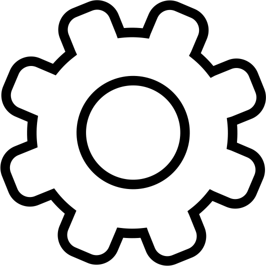
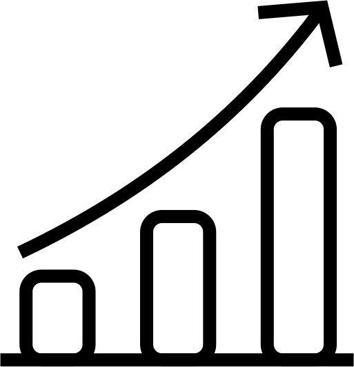

Olá,
Usuário
👋
Que tal começarmos um Pomodoro?
Usuário
, esteja focado... 🧠
O seu Pomodoro está em progresso.
Usuário
, que tal descansar agora? 🤩
Aproveite o seu tempo, logo estará em foco novamente.
0
:
0

